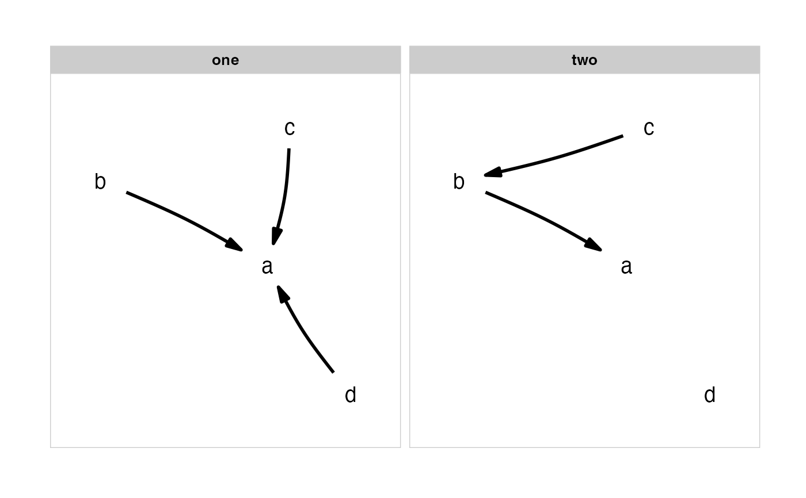
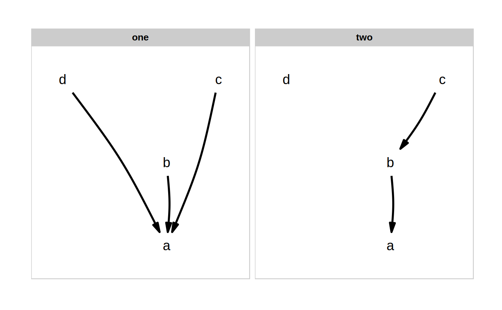

plot_model_set.RdPlot several causal hypothesis at once.
plot_model_set( model_set, labels = NULL, algorithm = "kk", manual_layout = NULL, text_size = 5, box_x = 12, box_y = 10, edge_width = 1, curvature = 0.05, rotation = 0, flip_x = FALSE, flip_y = FALSE, nrow = NULL, arrow = grid::arrow(type = "closed", 15, grid::unit(10, "points")) )
| model_set | A list of |
|---|---|
| labels | An optional set of labels to use for the nodes. This should be a named vector, of
the form |
| algorithm | A layout algorithm from |
| manual_layout | Alternatively, precisely define the layout yourself, by providing a
|
| text_size | Size of the node label text. |
| box_x | To avoid the arrows colliding with the nodes, specify the rectangular dimensions of an invisible box around each node. If you have long labels, you need to increase this. |
| box_y | To avoid the arrows colliding with the nodes, specify the rectangular dimensions of an invisible box around each node. If you have multi-line labels, you need to increase this. |
| edge_width | Width of the edges. |
| curvature | Curvature of the edges. A slight curvature can look pretty. |
| rotation | Supply the degrees you want to rotate the layout by. This is useful in order to put rotate your upstream nodes towards the top if needed. |
| flip_x | Whether to flip the node positions horizontally. |
| flip_y | Whether to flip the node positions vertically. |
| nrow | Number of rows to display the models on. |
| arrow | A The order of facets is taken from the ordering of the list, with the facet labels coming from the names of the list. If the list is unnamed, sequential lettering is used. |
A ggplot object.
#> Warning: The curvature argument has been deprecated in favour of strengthplot_model_set(m, algorithm = "sugiyama")#> Warning: The curvature argument has been deprecated in favour of strength